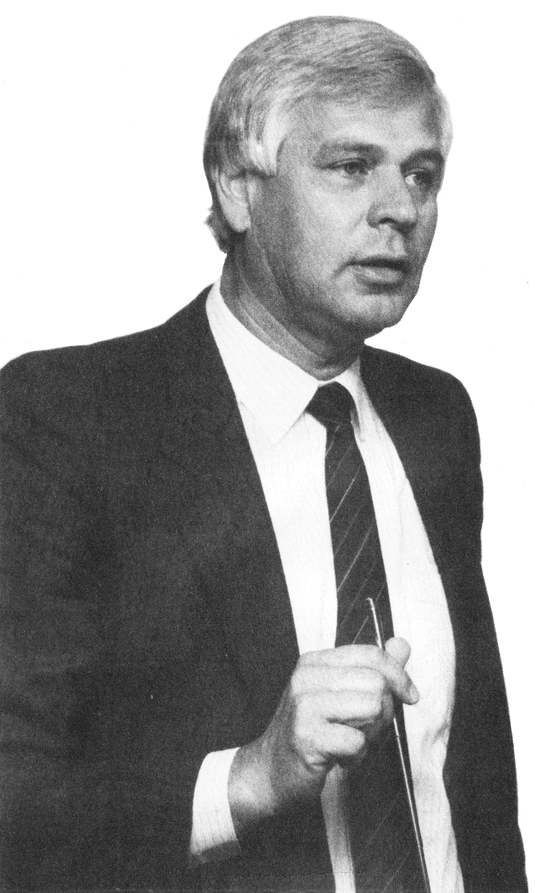

Ein Mann für Europa
Hinter dem Erfolg eines Unternehmens stehen immer Menschen. Commodore in Deutschland ist erfolgreich, und dafür trägt Harald Speyer, Vice President Commodore International, die Verantwortung.

Die Computerindustrie ist eine schnellebige Branche. Neue Computer kommen und werden bald durch noch bessere ersetzt. Ebenso verhält es sich mit den Managern bei diesen Unternehmen. So ist es schon etwas Außergewöhnliches, wenn Harald Speyer, Jahrgang 1940, am 13. Oktober 1986 sein zehnjähriges Jubiläum bei Commodore feiern konnte.
Angefangen hat er eigentlich als Fernmeldetechniker, nach der Militärzeit zog es ihn allerdings in den Verkauf in der Büromaschinenbranche. 1970 merkte Speyer, daß er zwar das Verkaufen perfekt beherrschte, aber der administrative und finanzielle Background fehlte. Das Studium der Betriebswirtschaft schaffte diesen Mangel ab. Bis 1976 war er dann Vertriebsleiter bei HP, als ihn Jack Tramiel überzeugte, daß die damals im Entstehen begriffenen Personal Computer eine große Zukunft vor sich hätten.
Schnell hatte Speyer die alleinige Geschäftsführung bei Commodore in Deutschland inne und ist heute im Vorstand der Muttergesellschaft und verantwortlich für die elf Gesellschaften in Europa.
Es ist eigentlich den Tochtergesellschaften in Europa, und speziell der deutschen Commodore Büromaschinen GmbH zu verdanken, daß die Muttergesellschaft die finanzielle Dürrestrecke des letzten Jahres relativ unbeschadet überstehen konnte.
Wesentlich zu dieser starken Position der Europäer hat H. Speyer beigetragen.
Neben einem guten Produkt gehört für Speyer das richtige Know-how im Marketing- und Salesbereich und natürlich ein gutes Team dazu.
»Es kommt immer auf die richtige Zielsetzung an und auf die Leute, die diese Zielsetzung ausführen. Wenn man eine gute Mannschaft hat, kann man bei gleichen Voraussetzungen wie sie auch die Konkurrenz hat, alles erreichen. Man muß natürlich den einzelnen Mitarbeitern auch selbständige Aufgaben übertragen können. Gefragt ist keine zentralistische Führung, sondern Vertrauen zu den Mitarbeitern, daß sie was leisten können.
Auf der anderen Seite, wenn der General nichts taugt, dann geht auch an der Front nichts mehr.«
Dieses Leistungsprinzip gilt besonders für Harald Speyer selbst. Ein durchschnittlicher Arbeitstag hat für ihn 12 bis 14 Stunden, es können aber auch mal 18 oder 20 Stunden werden. »Es muß die Bereitschaft vorhanden sein, mehr zu leisten.«
Die amerikanischen Manager bezeichnen ihn aufgrund der häufigen Reisen zu Besprechungen in die Vereinigten Staaten als ihren entferntesten Pendler. Dabei kommt das Reisen einer früheren Leidenschaft von Speyer entgegen. Allerdings mußte er in seinen jungen Jahren das Geld für seine Reisen hart verdienen. Dies veranlaßte ihn unter anderem dazu, sich nach einer Tätigkeit umzusehen, bei der er das nötige Kleingeld dafür verdienen kann.
Heute vertritt Harald Speyer die europäischen Interessen in den USA. So war er wesentlich beteiligt an der Entscheidung, daß MS-DOS-Computer von Commodore Deutschland entwickelt und verkauft werden. Ziel von H. Speyer ist es, für die Bereiche, für die er zuständig ist, weiterhin erfolgreich zu sein und die restlichen europäischen Länder ähnlich erfolgreich zu machen. Da er mittlerweile in wesentlichen Entscheidungsprozessen des Konzerns involviert ist, will er natürlich das Unternehmen weiter expandieren und wachsen lassen.
Privat wünscht er sich mehr Zeit für seine Familie. Dies kollidiert allerdings mit seiner Arbeit. »Wenn man beruflich weiterkommen will, muß man eben Kompromisse eingehen.«
In seiner knappen Freizeit taucht er gerne in südlichen Gewässern oder repariert defekte Geräte im Haushalt. Handwerkliches Geschick besitzt er noch von seiner technischen Ausbildung.
Das Angebot, meinen Fernseher zu reparieren, kann ich leider nicht annehmen, denn ich vermute, daß man auf Harald Speyer länger warten muß, als auf die vielbeschäftigten Handwerker.
(aa)